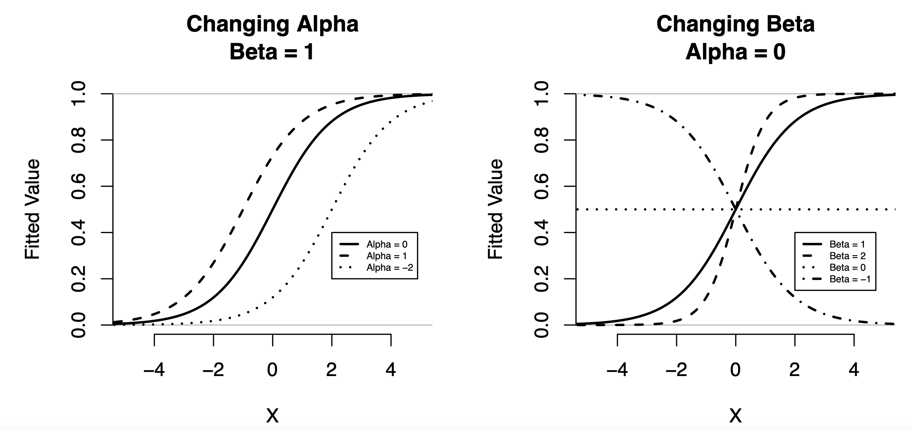
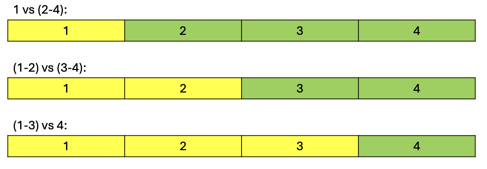
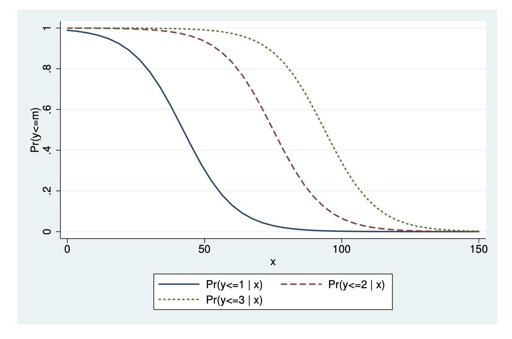

The Generalised Linear Model
Chapter 2, Quantitative Methods
In the last chapter, we discussed the classical linear model. However, the classical linear model has a few limitations, which are addressed by the generalised linear model (GLM). In this chapter, we explore the generalised linear model, including logistic and negative binomial regression, and the maximum likelihood estimator used to estimate GLMs.
Use the right sidebar for quick navigation. R-code is provided at the bottom.
GLMs and Maximum Likelihood
The Generalised Linear Model
There are some limitations to the classical linear model. Consider the linear probability model:
\[ \P(Y_i = 1|X_i)= \pi_i = \beta_0 + \beta_1X_{i1} + \dots + \beta_pX_{ip} + \eps_i \]
The classical assumptions assume homoscedasticity. However, probability of a binary event is given by the bernoulli distribution, for which \(\V \pi_i = \pi_i(1-\pi_i)\), which is clearly a function of outcome \(\pi_i\), meaning it is homoscedastic. And more importantly, the linear model will predict probabilities \(\P(Y_i = 1 | X_i)\) that are higher than 1 and less than 0, which, if we know the rules of probability, is nonsensical. This nonsensical outcome issue is also present in count and rate outcomes.
The generalised linear model allows us to “transform” the outcome variable (either \(Y_i\) or \(\pi_i\) when dealing with probabilities) through a link function \(g(\cdot)\), while maintaining the linear structure of the rest of the linear model. This allows us to deal with other distributions and avoid nonsensical predictions.
Of course, we have the Classical Linear Model, which is considered a GLM that has no link function:
\[ Y_i = \beta_0 + \beta_1X_{i1} + \beta_p X_{ip} + \eps_i \ = \ x_i^\top\beta + \eps_i \]
The Logistic Regression Model is a model that deals with probabilities \(\pi_i\), just like the linear probability model. It solves the limitations of the linear probability model through a link function:
\[ \log \left( \frac{\pi_i}{1 - \pi_i} \right) = \beta_0 + \beta_1X_{i1} + \dots + \beta_p X_{ip} \ = \ x_i^\top\beta \]
The Negative Binomial Model (and a special case called the Poisson model) is a model that deals with count and rate data (only positive values), where \(\lambda_i\) is the \(\E Y_i\) for a negative binomial distribution.
\[ \log \lambda_i = \beta_0 + \beta_1X_{i1} + \dots + \beta_p X_{ip} \ = \ x_i^\top \beta \]
We will explore each of these models in more detail later.
Maximum Likelihood Estimation
All GLMs are estimated with an estimator called the maximum likelihood estimator (MLE). This is also one of the most used estimators in statistics for a bunch of other methods, so it is useful to understand.
We have a set of population parameters in the vector \(\theta\) we want to estimate. This set of parameters determines our population distribution of \(Y_i\), which we can describe with some probability density function \(\varphi(Y_i, \theta)\). For example, in linear regression, our population \(y\) is determined by the population parameters \(\beta_0, \dots, \beta_p\).
When we are estimating parameters, we will have sample data with \(n\) number of observations, with each observation \(i\) having its own \(Y_i\) value. Thus, our sample looks something like \((y_1, \dots, y_n)\). Based on the probability density function \(\varphi(\cdot)\) of the population \(Y_i\), the probability of getting our observed \(y_1\) in our sample from the population data is \(\varphi(y_1, \theta)\), and the probability of getting \(y_i\) is \(\varphi(y_i, \theta)\).
We know by the rules of probability, that the probability of multiple independent events is the product of their probabilities. Thus, the probability that we get a specific sample with \(y\) values \((y_1, \dots ,y_n)\), based on the value of our population parameters \(\boldsymbol\theta\) is given by the likelihood function \(L\):
\[ \begin{align} L(\theta, y) & = \varphi(y_1;\theta) \times \varphi(y_2;\theta) \times \dots \times \varphi(y_n;\theta) = \prod\limits_{i=1}^n \varphi(y_i, \theta) \\ & = \varphi(y, \theta), \ \text{where this is a joint probability PDF with vector } y \end{align} \]
We want to find values of \(\theta\) that make it the highest probability we observe our sample \(y_1, \dots ,y_n\). This is done by maximising the likelihood function \(L(\cdot)\). However, maximising the likelihood function \(L(\cdot)\) is very difficult. Luckily, we can use the log of the likelihood function \(\ell(\cdot)\), which retains the same maximum/minimum points as \(L(\cdot)\) why being easier to work with.
\[ \begin{align} \ell (\theta; y)& = \log L(\theta, y) \\ & = \log \left(\prod_{i=1}^n \varphi(y_i; \theta) \right) \\ & = \log[\varphi(y_1, \boldsymbol\theta) \times \varphi(y_2, \boldsymbol\theta) \times \dots \times \varphi(y_n, \boldsymbol\theta)] && \text{(expand product notation)} \\ & = \log[\varphi(y_1, \boldsymbol\theta)] + \log [\varphi(y_2, \boldsymbol\theta)] + \dots + \log[\varphi(y_n, \boldsymbol\theta)] && \text{(property of logs)} \\ & = \sum\limits_{i=1}^n \log[\varphi(y_i, \boldsymbol\theta)] && \text{(condense into sum)} \end{align} \tag{1}\]
Score Function and Expectation
The gradient of \(\ell(\theta; y)\) with respect to vector \(\theta\) is known as the score function \(s(\theta, y)\):
\[ s(\theta;y) = \frac{\partial}{\partial \theta} \ell(\theta; y) = \frac{\partial}{\partial \theta} \sum\limits_{i=1}^n \log[\varphi(y_i; \theta)] \]
The \(\hat\theta\) values of MLE are the \(\theta\) that solve \(s(\theta; y) = 0\). If we have \(p\) parameters, there will be \(p\) partial derivatives within the gradient.
Let us define the true parameter value in the population as \(\theta_0\), which implies the score function of \(\theta_0\) is \(s(\theta_0; Y_i)\), where \(Y_i\) is the random outcome variable. Vector \(y\), our sample, is a realisation of this random variable - since we are sampling for our observed \(y\), our sampled \(y\) will change with a different sample. Thus, the score function is also a random variable with expectation and variance.
The expectation of the score function in respect to random \(Y_i\), evaluated at true population parameter value \(\theta_0\) is:
\[ \begin{align} \E[s(\theta_0; Y_i)] & = \int s(\theta_0;y) \overbrace{\varphi(y; \theta_0)}^{\P \ \mathrm{ of\ sample \ y}}dy && (\text{definition of continuous } \E) \\ & = \int \left[ \frac{\partial}{\partial\theta} \ell(\theta; y)\right]\varphi(y \theta_0)dy && \text{(plug in score function)} \\ & = \int\left[\frac{\partial}{\partial\theta} \varphi(y; \theta) \right] \varphi (y; \theta_0)dy && \text{(plug in } \ell \text{, y is vector so no summation needed)} \\ & = \int \frac{\frac{\partial}{\partial\theta} \varphi(y; \theta_0)}{\varphi(y; \theta_0)}\varphi(y; \theta_0) && (\because [\log(u(x))]' = u'(x)/u(x) \ ) \\ & = \int \frac{\partial}{\partial\theta} \varphi(y; \theta_0) && \text{(cancel out)} \\ & = \frac{\partial}{\partial\theta} \int \varphi(y; \theta_0) && \text{(can flip deriv. and anti-deriv.)} \\ & = \frac{\partial}{\partial\theta} 1 = 0 && \text{(indef int. of PDF = 1)} \end{align} \]
Thus, the expectation of the score at true population parameter \(\theta_0\) in respect to the random variable vector \(y\) is 0.
Fischer Information Matrix
With the expectation from above, we can also find the variance-covariance matrix of the score function at \(\theta_0\):
\[ \begin{align} \V s(\theta_0; y) & = \E [(s(\theta_0; y) - \E(s(\theta_0; y))^2 ] && (\because \V Z = \E[Z - \E Z]) \\ & = \E[(s(\theta_0; y) - 0)^2] && (\because \E [s(\theta_0 ; y)] = 0) \\ & = \E\left [\frac{\partial \ell (\theta_0; y)}{\partial \theta} \frac{\partial \ell (\theta_0; y)}{\partial \theta^\top} \right] && \text{(plug in and square } s(\theta_0, y)) \\ & = \E\left[ -\frac{\partial^2 \ell (\theta_0; y)}{\partial\theta\partial \theta^\top}\right] \equiv \mathcal I(\theta_0) \end{align} \]
Where \(\mathcal I (\theta_0)\) is also known as the expected fisher information matrix. This is also the matrix of second derivatives of the log-likelihood, meaning this is the negative of the Hessian matrix of the log-likelihood.
We can also get the observed equivalent of our parameter estimate \(\theta\), called the observed information matrix, which does not involve expectation (which can be difficult):
\[ I(\theta;y) = -\frac{\partial^2 \ell(\theta; y)}{\partial \theta \partial \theta^\top} \]
Through complex math beyond this course, we can show that the asymptotic variance of any MLE estimate \(\hat\theta\), \(\V \hat\theta\), is the inverse of the information matrix:
\[ \V (\hat\theta) = \mathcal I(\hat\theta)^{-1} \]
We have some true population parameter \(\theta\) that we are estimating with a sample. Our sample will produce some estimate \(\hat\theta_n\).
Imagine we take another sample from the population: we will get a slightly different estimate. Taking \(N\) samples, we get estimates \(\hat\theta_1, \hat\theta_2, \dots, \hat\theta_N\). Thus, our single sample estimate \(\hat\theta_n\) is actually a realisation of a random variable, drawn from the sampling distribution \(\hat\theta_1, \dots, \hat\theta_N\). The best guess of the value of \(\hat\theta_n\) is the expected value \(\E \hat\theta_n\) of the distribution.
However, our sampling distribution of \(\hat\theta_1, \dots, \hat\theta_N\) can also be described by the variance - how spread out the distribution is. Even if our estimator is unbiased, if it has a very high variance (spread), that means any specific realisation \(\hat\theta_n\) might be far away from the expected value. Thus, we want a low-variance estimator.
When we have finite (but sufficiently large samples), this is our variance estimate. We can also use the observed information matrix \(I(\hat\theta)^{-1}\).
Asymptotics and Cramér-Rao
Through complex proofs beyond the scope of this chapter, we can determine that asymptotically as \(n \rightarrow ∞\), the distribution of the MLE estimates \(\hat\theta\) becomes:
\[ \hat\theta \sim \mathcal N(\theta_0, \mathcal I(\theta_0)^{-1}) \]
This tells us two things. First, maximum likelihood estimates are asymptotically consistent, since the asymptotic distribution has an expectation \(\E \hat\theta = \theta_0\).
An estimator is asymptotically consistency, if as we increase the sample size \(n\) towards \(∞\), the sampling distribution will become more and more concentrated around the true population \(\theta\). At \(n = ∞\), our sampling distribution collapses to just the true population value \(\theta\). Mathematically:
\[ \P(|\hat\theta_n - \theta) > \epsilon) \rightarrow 0, \ \mathrm{as} \ n \rightarrow ∞ \]
This essentially means that the probability that the difference between our sample estimate \(\hat\theta_n\) and \(\theta\) is greater than some arbitrarily small value \(\epsilon\) becomes 0, as our sample size approaches infinity.
Note: estimators can be biased but consistent. This means they are biased at small sample sizes, but as sample size increases, they are consistent.
Second, we know that the asymptotic variance of MLE estimates is \(\mathcal I(\theta_0)^{-1}\). This is notable because of the Cramér-Rao bound. The Cramér-Rao bound states that the variance of any unbiased estimator \(\hat\theta\) is bounded by the reciprocal of the Fisher Information matrix:
\[ \V \hat\theta_n ≥ \frac{1}{\mathcal I(\theta)} \]
We will not prove this here since it is technical. However, this is the lowest possible variance of any unbiased estimator. As we see above, the asymptotic variance of the MLE \(\hat\theta\) is exactly \(1/\mathcal I(\theta)\). Thus, this tells us there is no other asymptotically consistent (unbiased) estimator that has a lower variance than the MLE.
However, do note that the MLE is biased in finite-samples (but the bias becomes small in large-samples). This becomes an issue when we are dealing with some applications of causal inference, such as fixed effects.
We have some true population parameter \(\theta\) that we are estimating with a sample. Our sample will produce some estimate \(\hat\theta_n\).
Imagine we take another sample from the population: we will get a slightly different estimate. Taking \(N\) samples, we get estimates \(\hat\theta_1, \hat\theta_2, \dots, \hat\theta_N\). Thus, our single sample estimate \(\hat\theta_n\) is actually a realisation of a random variable, drawn from the sampling distribution \(\hat\theta_1, \dots, \hat\theta_N\). The best guess of the value of \(\hat\theta_n\) is the expected value \(\E \hat\theta_n\) of the distribution.
An unbiased estimator is when \(\E\hat\theta_n = \theta\), or in other words, the expected sample estimate when drawn from the sampling distribution is equal to the true population value \(\theta\). We want an unbiased estimator, because that means any sample estimate \(\hat\theta_n\) is expected to equal the true population parameter.
OLS as a MLE
Earlier, we noted that all linear models are estimated with a Maximum Likelihood Estimator. This includes the classical linear model.
OLS is a MLE under the classical assumptions, and assuming \(Y_i\) is normally distributed at \(Y_i \sim \mathcal N(X\beta, \sigma^2)\) (where \(\mu = \E(Y_i|X_i) = x_i^\top\beta\), and \(\sigma^2\) as the homoscedastic variance of \(\eps_i\)). By the PDF of a normal distribution, we can express the PDF of \(Y_i\):
\[ f(z) = \frac{1}{\sqrt{2\pi\sigma^2}}e^{-\frac{(z-\mu)^2}{2\sigma^2}} \quad \implies \quad f(Y_i|\beta, \sigma^2) = \frac{1}{\sqrt{2\pi\sigma^2}}e^{-\frac{(Y_i - x_i^\top\beta)^2}{2\sigma^2}} \]
Now using Equation 1, the log-likelihood function \(\ell\) of our sample \((y_1, \dots, y_n)\) for linear regression is:
\[ \begin{align} \ell(\beta, \sigma^2; y_i) & = \sum\limits_{i=1}^n \log \left( \frac{1}{\sqrt{2\pi\sigma^2}} e^{\left( -\frac{1}{2 \sigma^2}(y_i - x_i^\top \beta)^2\right)} \right) \\ & = \sum\limits_{i=1}^n \log (1) - \log (\sqrt{2\pi\sigma^2}) + \log\left( e^{\left( -\frac{1}{2 \sigma^2}(y_i - x_i^\top\beta )^2\right)}\right) && \text{(prop. of logs)} \\ & = \sum\limits_{i=1}^n 0 - \frac{1}{2}\log ({2\pi\sigma^2}) + \left( -\frac{1}{2 \sigma^2}(y_i - x_i^\top\beta)^2\right) && \text{(prop. of logs)} \\ & = -\frac{n}{2} \log (2\pi\sigma^2) -\frac{1}{2 \sigma^2}\sum\limits_{i=1}^n(y_i - x_i^\top\beta)^2 && \text{(prop. of sums)} \end{align} \]
Look at the right part of the above equation. We can see that is the SSR. Thus, we can rewrite:
\[ \ell(\beta, \sigma^2; y) = -\frac{n}{2}\log(2\pi\sigma^2) - \frac{1}{2\sigma^2}(y-X\beta)^\top (y-X\beta) \]
And if we take the gradient in respect to \(\beta\), we can see we get the same first order condition as OLS:
\[ \frac{\partial \ell}{\partial \beta} = -2X^\top y + 2 X^\top X\beta = 0 \]
With the same first order condition, we will get the same \(\beta\) estimate as in OLS. Thus, we can see under the condition of normality of \(Y_i\), MLE is equivalent to OLS.
Newton and Fischer Algorithms
We need to solve \(s(\theta; y) = 0\) to find our MLE estimates \(\hat\theta\). However, there is often no closed form/analytical solution like OLS. Thus, we must use iterated algorithms to solve for \(\hat\theta\).
One version is the Newton Algorithm (also called the newton-raphson algorithm). Suppose \(\theta\) is a scalar (only one parameter). For values of \(\theta\) that are close to the true population \(\theta_0\), the first-order taylor series expansion of \(s(\theta)\) about \(\theta_0\) states:
\[ s(\theta; y) \approx s(\theta_0; y) + s'(\theta_0;y)(\theta - \theta_0) \]
Where \(s'(\theta_0; y)\) is the first derivative of the score function \(s(\theta; y)\) evaluated at \(\theta = \theta_0\). When dealing with a vector \(\theta\), the equivalent first derivative is the hessian matrix of \(\ell(\cdot)\), or the negative of the observed information matrix:
\[ \frac{\partial s(\theta; y)}{\partial \theta} = \frac{\partial^2 \ell(\theta; y)}{\partial \theta \partial \theta^\top} = - I(\theta) \]
This gives us the following first-order taylor series expansion of \(s(\theta)\), and when we solve \(s(\theta; y) = 0\) to maximimse, we can solve for \(\theta\):
\[ \begin{align} s(\theta; y) & \approx s(\theta_0; y) - I(\theta_0)(\theta - \theta_0) \\ 0 & \approx s(\theta_0; y) - I(\theta_0)(\theta - \theta_0) && (\because s(\theta;y) = 0) \\ I(\theta_0)(\theta - \theta_0) & \approx s(\theta_0; y) && (+I(\theta_0)(\theta - \theta_0) \text{ to both sides})\\ \theta - \theta_0 & \approx I(\theta_0)^{-1}s(\theta_0; y) && (\times I(\theta_0)^{-1} \text{ to both sides}) \\ \theta & \approx \theta_0 + \approx I(\theta_0)^{-1}s(\theta_0; y) && (+\theta_0 \text{ to both sides}) \end{align} \]
Since \(\theta_0\) is unknown, we cannot use this formula directly. Thus, we use an iterative procedure. We start with some initial value \(\theta^{(0)}\) that is randomly chosen. Then, we “update” for a new value \(\theta^{(1)}\):
\[ \theta^{(1)} = \theta^{(0)} + I (\theta^{(0)})^{-1} s(\theta^{(0)}; y) \]
And we do the same updating for \(\theta^{(2)}\) with \(\theta^{(1)}\), and \(\theta^{(m+1)}\) using \(\theta^{(m)}\), until the algorithm converges and the differences between \(\theta^{(m+1)}\) using \(\theta^{(m)}\) becomes minimal (under some pre-specified threshold of “tolerance”). An alternative is fisher-scoring, which does the same thing but with the expected fisher information matrix \(\mathcal I(\theta)\) instead of the observed \(I(\theta)\) when \(\mathcal I(\theta)\) is not too difficult to compute. This is the method used for most GLMs.
Information Criterion Statistics
Recall that the likelihood function \(L(\cdot)\) is the probability of observing a particular sample given the parameters \(\theta\), or in other words, \(\P (y | \theta)\).
This property of \(L(\cdot)\) also allows us to compare models between each other. For example, let us say we have two models of the same outcome variable \(Y_i\), one model with parameters \(\theta_1\), and another with parameters \(\theta_2\) (perhaps one has more parameters/explanatory variables, etc). The model with a higher likelihood \(L(\theta; y)\) is the model that is considered the better fit.
Thus, the likelihood value \(L(\theta; y)\) allows us to compare the explanatory power of models, like \(R^2\) does for the classical linear model. This will become useful when we discuss likelihood ratio tests.
A group of statistics, called information criterion (IC) statistics, use the likelihood \(L(\cdot)\) to compare different models. The idea behind these statistics is to not only reward higher likelihoods \(L\), but also reward simplicty of models with less parameters.
The most commonly used is Akaike’s Information Criterion (AIC). The formula for AIC is as follows:
\[ AIC = -2 \log L + 2p \]
- Where \(L\) is the likelihood of the model in question evaluated as \(L(\theta ; y)\), and \(p\) is the number of parameters in the model.
The lower the AIC is, the better the model is considered. There are also alternative IC statistics, such as the Bayesian Information Criterion (BIC).
Logistic Regression Model
Model Specification
The logistic model is a model for binary outcome variables \(Y_i\) distribute according to the bernoulli distribution. Specifically, it models the outcome \(\E(Y_i |X_i) = \P(Y_i = 1|X_i) = \pi_i\) like the linear probability model. As a GLM, logistic regression applies a link function to the outcome \(\pi_i\). The model is specified:
\[ \log \left( \frac{\pi_i}{1-\pi_i}\right) = \beta_0 + \sum\limits_{j=1}^n \beta_j X_{ij} \ = \ x_i^\top \beta \]
However, this form of the model with \(\log(\pi_i/1-\pi_i))\) (called the log-odds) is not very useful - after all, we care about \(\E(Y_i |X_i) = \P(Y_i = 1|X_i) = \pi_i\). Thus, through algebra manipulation, we can isolate \(\pi_i\) on the left for a model of probabilities \(\pi_i\) (proof provided below).
Start with the original log-odds model, and take \(e\) to the power of both sides to get rid of the natural log:
\[ \log \left( \frac{\pi_i}{1-\pi_i}\right) = x_i^\top\beta \quad \implies \quad \frac{\pi_i}{1-\pi_i} = e^{x_i^\top \beta} \tag{2}\]
The left eqution is a model for the odds (we will explore this more later). Now, we just solve for \(\pi_i\):
\[ \begin{align} \pi_i & = (1- \pi_i)e^{x_i^\top \beta} && (\times (1-\pi_i) \text{ to both sides}) \\ \pi_i & = e^{x_i^\top \beta} - \pi_i e^{x_i^\top \beta} && \text{(multiply out)} \\ \pi_i + \pi_i e^{x_i^\top \beta} & = e^{x_i^\top \beta} && (+\pi_i e^{x_i^\top \beta} \text{ to both sides}) \\ \pi_i(1 + e^{x_i^\top \beta}) & = e^{x_i^\top \beta} && (\text{factor out }\pi_i) \\ \end{align} \]
Finally, dividing both sides by \((1+e^{x_i^\top \beta})\) gets us the model for the outcome \(\pi_i\):
\[ \E(Y_i |X_i) = \P(Y_i = 1|X_i) = \pi_i = \frac{e^{x_i^\top \beta}}{1+ e^{x_i^\top \beta}} \]
In which we can estimate parameter vector \(\beta\) with MLE as explained above. If you graph this function of \(\pi_i\), you will see that \(\pi_i\) always stays between 0 and 1.
Fitted Probabilities and Applications
Once we have estimated parameters in vector \(\beta\), we can get fitted probabilities \(\hat\pi_i\):
\[ \hat\pi_i = \frac{e^{x_i^\top \hat\beta}}{1+ e^{x_i^\top \hat\beta}} \]
The fact that predicted \(\hat\pi_i\) is always between 0 and 1 makes the logistic model significantly better for the prediction of probabilities than the linear probability model. In fact, if our goal is prediction, we will almost always prefer the logistic model over the classical linear model.
We can also do classification - i.e. predicting if unit \(i\) should be \(\hat Y_i =1\) or \(\hat Y_i = 0\). Typically if predicted \(\hat\pi_i > 0.5\), we assign unit \(i\) to \(\hat Y_i = 1\).
The form of the logistic regression is confusing - it is not a simple linear line. Below is the graph of a simple logistic regression with only one explanatory variable, and how changing coefficients \(\beta_0 = \alpha\) and \(\beta_1\) affect the curve of \(\pi_i\):

We can see that the curves are always between 0 and 1. We also see that \(\beta_1\) affects the relationship between \(X_i\) and \(\pi_i\). However, the value of \(\beta_1\) is not directly interpretable unlike linear regression. However, there is a way to interpret a modified version of the coefficients, called the odds ratios (see below).
Interpretation with Odds Ratios
Before we define odds ratios and how they can help with interpretation, we first need to define the odds of an event \(A\). This is defined as the probability of \(A\) occuring, divided by the probability of \(A\) not occuring. We can apply the same logic to \(\P (Y_i = 1) = \pi_i\):
\[ \mathrm{odds}_A = \frac{\P(A)}{1-\P(A)} \quad \implies \quad \mathrm{odds}_{Y_i = 1} = \frac{\pi_i}{1 - \pi_i} \]
In Equation 2, we also showed the logistic regression can be written with the outcome of odds of \(Y_i = 1\).
Odds Ratios are the ratio of two odds. For example, let us say we have two events \(A\) and \(B\). The odds ratio is:
\[ OR = \frac{\mathrm{odds}_{A}}{\mathrm{odds}_{B}} = \frac{\P(A)/[1-\P(A)]}{\P(B)/[1-\P(B)]} \]
We know that the logistic model measures \(\pi_i = \P(Y_i = 1 | X_i)\). This implies that \(\pi_i\) depends on the value of \(X_i\). That also means the odds depend on \(X_i\). This allows us to compare how the odds change when we change \(X_i\).
For example, let us say we have the odds when \(X_i = x\), and \(X_i = x+1\) for a simple logistic regression. Using Equation 2, we can calculate the odds and odds ratio of \(Y_i\) given these two different values of \(X_i\):
\[ \begin{align} & \mathrm{odds}_{Y_i = 1 |X_i = x} = \left(\frac{\pi_i}{1-\pi_i} \biggr|X_i = x \right) = e^{\beta_0 + \beta_1X_i} = e^{\beta_0 + \beta_1(x)}\\ & \mathrm{odds}_{Y_i = 1 |X_i = x+1} = \left(\frac{\pi_i}{1-\pi_i} \biggr|X_i = x+1 \right) = e^{\beta_0 + \beta_1X_i} = e^{\beta_0 + \beta_1(x+1)} \\ & \frac{\mathrm{odds}_{Y_i = 1|X_i = x+1}}{\mathrm{odds}_{Y_i = 1|X_i = x}} = \frac{e^{\beta_0 + \beta_1(x+1)}}{e^{\beta_0 + \beta_1(x)}} = \frac{e^{\beta_0 + \beta_1x+\beta_1}}{e^{\beta_0 + \beta_1x}} = \frac{e^{\beta_0}e^{\beta_1x}e^{\beta_1}}{e^{\beta_0} e^{\beta_1x}} = e^{\beta_1} \end{align} \]
Thus, when increasing \(X_i\) by one unit, the odds of an observation being in category \(Y_i = 1\) multiply by \(e^{\beta_1}\). A multiplicative increase also implies percentage change.
We can also interpret odds ratios as percentage changes in odds (because that is what a multiplicative change in):
- If \(e^{\beta_1} > 1\), then a one unit increase in \(X_i\) is associated with a \((e^{\beta_1} - 1)\times 100\) percent increase in the odds of an observation being in category \(Y_i = 1\).
- If \(e^{\beta_1} < 1\), then a one unit increase in \(X_i\) is associated with a \((1-e^{\beta_1} )\times 100\) percent decrease in the odds of an observation being in category \(Y_i = 1\).
- If \(e^{\beta_1} = 1\), then there is no relationship between \(X_i\) and \(Y_i\).
An important point (that is often a mistake) is that odds are not probabilities. A doubling of odds is not equivalent to a doubling of probability. This is a common mistake in interpretation.
Ordinal and Multinomial Models
Ordinal Logistic Regression
What if we have an ordinal outcome \(Y_i \in \{0, 1, 2, \dots \}\). The ordinary logistic regression model is a set of \(c-1\) binary logistic regressions that calculate cumulative probabilities, where \(c\) is the total number of categories.
Ordinal logistic model is a set of \(c-1\) binary models, where \(c\) is the number of categories. For example, take \(c=4\):
- The first model is a binary of category 1 vs. categories 2-4.
- The second model is a binary of categories 1-2 vs. categories 3-4.
- The third model is a binary of categories 1-3 vs. category 4.

Where the categories highlighted in yellow are considered to be \(Y_i = 1\) for that specific binary regression, and the green are considered \(Y_i =0\) for the specific binary regression.
We can see that the yellow increases from just category 1 in the first regression, to categories 1-3 in the last regression. This tells us that these are actually measuring the cumulative probabilities \(\gamma_j\) (for example, the final regression is predicting the probability of being in either category \(j ≤ 3\), compared to \(j = 4\)).
The ordinal logistic regression model is a model for the cumulative probability \(\gamma_j\) of an outcome \(Y_i\) being in a certain category \(j\) or below, for categories \(j = 1, \dots, c-1\):
\[ \gamma_j = \P(Y_i ≤ j) = \frac{e^{\beta_{0j} - (\beta_1X_{i1} + \dots + \beta_p X_{ip})}}{1 + e^{\beta_{0j} - (\beta_1X_{i1} + \dots + \beta_p X_{ip})}} \]
Notice how for each \(j\), there is a different intercept \(\beta_{0j}\) value. However, the other coefficients \(\beta_1, \dots, \beta_p\) do not depend on \(j\), and are consistent across all \(j\). What this means is that the \(c-1\) binary logistic regressions are “parallel”, since they have the same coefficients, but are shifted by intercepts. This is called the proportional odds assumption, and assumes all of the binary comparisons must have the same correlation between \(X_{ij}\) and \(Y_i\). If you believe this is not reasonable to assume, you should use the multinomial model below.
Imagine we have \(c=4\) categories. The 3 binary model’s predicted cumulative probabilities are displayed below.

Notice how all three are parallel, since they have the same \(\beta_1, \dots, \beta_p\) coefficient values. They are only shifted due to \(\beta_{0j}\) depending on the model \(j\).
Interpretation of the coefficients \(\beta_1, \dots, \beta_p\) use odds ratios as discussed above. An increase in one unit of \(X_I\) increases the odds of a unit being in a higher category of \(Y_i\) by a multiplicative increase of \(e^{\beta_j}\).
Predictions for probabilities can be calculated with the above equation but substituting in our predicted \(\hat\beta\) from maximum likelihood estimation. Of course, the model is specified towards cumulative probabilities \(\gamma_j = \P(Y_i ≤ j)\). For the probability of a specific category \(\P(Y_i = j)\):
- The probability of the first category \(j=1\) is \(\P (Y_i = 1) =\hat\gamma_1\).
- The probability the last category \(j =c\) is 1 minus the cumulative probability of the second-to-last category: \(\P(Y_i = c) = 1 - \gamma_{c-1}\).
- The probability of any category \(j\) in the middle is that category \(j\)’s cumulative probability minus the cumulative probability of \(j-1\): \(\P(Y_i = j) = \gamma_j - \gamma_{j-1}\).
Multinomial Logistic Regression
Negative Binomial Regression
Model Specification
Talk about negative binomial distribution.
Include model for rates, and fitted probabilities.
Interpreting Coefficients
Poisson Regression
Statistical Inference
Hypothesis Testing
Confidence Intervals
add odds ratios